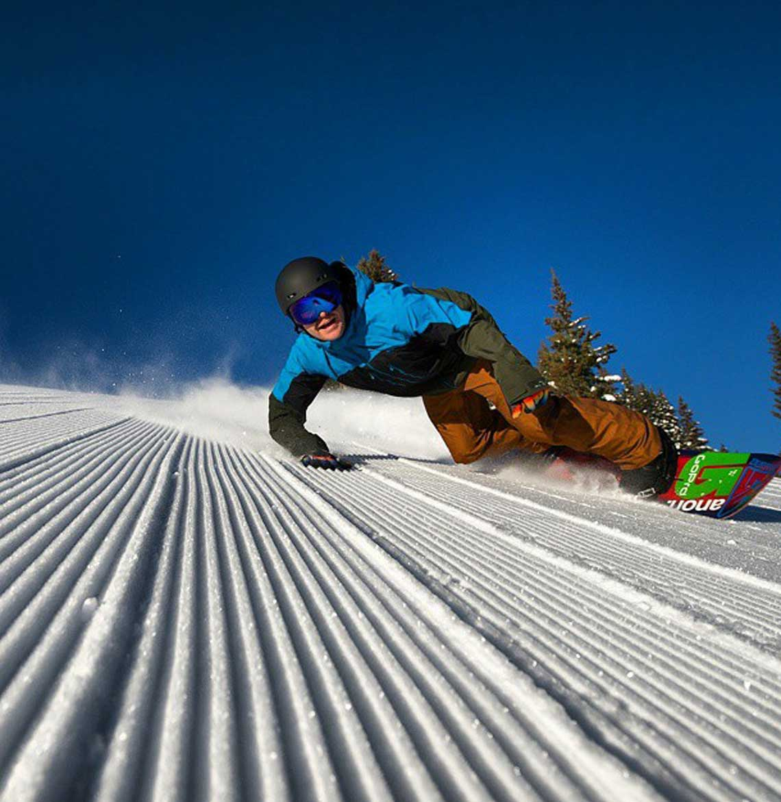

Fill out the form below and tell us why you should be a Woolx Team member
Kathy Karlo
Rock Climbing Enthusiast
Kathy Karlo is a rock climber based out of Brooklyn, NY. Her love of rock and ice has been a life changing experience. She encourages anyone and everyone to try it. Her belief is that climbing a rock is so much more than that... it's a life journey that forever tests the limits of possibility!
I grew up loving the outdoors, from sea level to the mountain tops! My parents shared with me a love of the outdoors from the moment I was born. My childhood was spent camping, boating, fishing, skiing and mostly exploring. My love for animals grew right along with my love for nature. I guess you could say that I had an adventurous spirit and by high school, I became an avid downhill skier.
I married and had three children and for the next 25 years I was fully immersed in raising my children and sharing with them the great joys that I had growing up.
At 50 years old I found myself an empty nester and joined the mountaineers. I was soon scrambling to mountain peaks, snow shoeing, kayaking, cross country skiing, and of course still downhill skiing at every opportunity.
In August 2007, I visited a friend in Alaska who had sled dogs. I went out on a training run with the dogs. No snow, no sled, but by four-wheeler. I fell in love with those incredible dogs that are born to pull. Their enthusiasm, their drive was amazing. A dream was born... I wanted to drive a dog team across the wilds of Alaska. I wanted to run Iditarod. I could only imagine what it must be like on a sled, on snow.
Four months later, I found out. It was spiritual. It was more than I could ever imagine. Two months later I flew to Alaska and volunteered for Iditarod 2008. I was hosted by Ted (retired Iditarod musher) and Paula English. I had no idea at the time, that the next year would find me living with them and running Ted's dogs and on my way to qualifying for the Iditarod.
I qualified for Iditarod 2012 and at age 55, I drove my team of incredible dogs 1000 miles across Alaska to Nome. I was awarded the Red Lantern Award, yes, the last musher across the finish line.
An experience of a lifetime and a personal win for me and my Dogs.
Mark Arrow is a world renowned rock climber and a 40 year veteran of outdoor adventuring. He has climbed mountains, rocks and ice all over the globe, from New York's Keene Valley to The Himalayas.
Mark enjoys guiding other climbers and introducing newcomers to the sport. He divides his time between professional guide work with Rock and Road Guides and his masonry business, Arrow Masonry, where he is a fifth generation stonemason.
Hey! Name's Dennis. I'm a Boston-based lover of hiking, cycling, and generally being outside.
In the summer of 2008, I cycled 3,600 miles from North Carolina to California. After that, I worked for six years in financial services.
Biking was more fun, so I just turned in my notice. On April 28th I'll be taking the first of many steps on my next big adventure: an attempted thru-hike of the 2,180 mile long Appalachian trail. I couldn't be more excited to take it on, and I'm honored to be doing so as part of WoolxinAction! I will definitely be putting this clothing to the test!
Paulina is an all-around adventurer with a home base in San Francisco, CA. From hiking to climbing to mountaineering, she tries to do it all, and writes about it on her blog at Little Grunts.
When she's not outside, you can find her cuddling with her cat, baking all the things, or writing code for her day job.
I was born and raised right here in Small Town, Kansas, USA. Every aspect of the outdoors has been a primary part of my life from day 1. Waterfowl hunting is my passion, but I spend over 200 days a year pursuing everything from Turkeys to Rainbow Trout.
In 2011, I started my own hunting company called Duck Wild Waterfowl. Through Duck Wild, I am fortunate enough to be able to produce hunting products, advertise for a few great companies such as Woolx, and occasionally guide Waterfowl and Turkey hunts.
The outdoors is a part of my livelihood, but it is more than that to me. Beautiful Kansas sunrises make the long days and restless nights worth every second of hard work. Kansas can be a blizzard one minute and a scorcher the next which is why I am extremely excited to be a part of the WoolxinAction team! If Woolx clothing can handle everything I put it through than it can handle anything! I guarantee it!
Ilana is a native of Southern California, reaping the benefits of the locale - always to be found either surfing, climbing, snowboarding or managing all three in one day. She is an accomplished rock and ice climber and loves earning her turns in the backcountry splitboarding. Currently residing in Colorado, she is a full-time nursing student and spends every lick of free time in the outdoors exploring mountains and pursuing adventure in whatever form it takes.
She has been featured in various media outlets including the December 2013 issue of 'Rock and Ice' magazine, December/January 2013 issue of 'Gripped Climbing' magazine, Canyoneering: A Guide to Techniques for Wet and Dry Canyons (How To Climb Series) by Dave Black as well as a Climbing Expert on MTV's Parental Control (Season 7 - "Heather").
Cliff Notes: Eiger North Face via 1938 (Original) Route, Matterhorn North Face via Schmid Route, Rubezahl (WI 6 - Kandersteg, Austria), Bird Brain Boulevard (WI 5, M6, Ouray, CO), Vallee Blanche via Grand Envers du Plan descent
Kim and Greg are the quintessential middle aged ski bums, choosing to skip out on the conventional 9-5 in pursuit of adventure, cycling, traveling, hiking, taking some photos and, of course, skiing.
Since embarking on their journey in 2011, they've put thousands of miles on their road bikes, picked up a 100 day season pin from Aspen Snowmass, and average 90 nights on the road each year in pursuit of their next adventure.
Currently residing near Lake Tahoe, the pair frequently can be found hiking somewhere in the West, exploring and capturing their pursuits on their blog, MiddleAgedSkiBum.com.
Along the way, the two formed Chasing Light Media, where they specialize in pro cycling, sports, event and landscape/fine art photography.
Marti Davis grew up in southwest Missouri in a family that hunted and spent time together outdoors. She started hunting herself in her mid 20's after Jimmy, her husband, introduced her to deer hunting.
She and Jimmy still reside in Willard, the same small hometown they were both raised in; along with Maggie, their mini dachshund.
Hunting and the outdoors isn't just a past time for Marti, it's her lifestyle and her passion. She enjoys hunting, trapping, fishing, scouting, working on food plots, riding an ATV and even brush hogging - although it's not at the top of her "favorites" list.
Besides her home state of Missouri, Marti has traveled to hunt in Tennessee, Idaho, Kansas, Arkansas, Illinois, Montana, Colorado and New Mexico. She has taken whitetail deer, turkey, black bear, elk and antelope. She also hunts small game, traps and hunt predators and occasionally hunts waterfowl. Whatever season, is open, she's up for it.
Marti is on the pro-staff for Mossy Oak camouflage and Moultrie Products. She enjoys working with these companies and representing them at trade shows and outdoor stores. Marti also writes her column 'Marti Davis Afield' at the Women's Outdoor News. (www.womens outdoornews.com)
She also loves sharing her passion and introducing new hunters to the sport. Marti truly believes we must pass on our great hunting heritage.
You have heard about people being able to lift cars because of intense adrenaline running through their bodies, right? That’s the kind of adrenaline I get when I am fishing except I do not lift cars – I reel in enormous fish – some of them the largest species in the world.
After working as a television news Anchor for nearly 20 years, I traded in long hours, breaking news and investigative stories for a way to live my life pursuing my passion for travel and outdoor adventure.
I run a corporate content writing and travel writing company called ThreeWordPress. When I am not writing marketing content for websites or ghostwriting blogs, I am an award-winning travel writer and member of the Society of American Travel Writers covering outdoor adventure and extreme fishing for many publications.
My grandpa instilled in me a love of the outdoors and fishing at an early age. He would be proud to see that little girl grow up to hold a record in Thailand for catching the Mekong giant catfish and go after the world record for the enormous wels catfish in Spain.
When I am not searching for my next monster fish conquest, I am in Columbus, Ohio with my dog Sunny.
Whether I am fishing, ziplining, hiking, riding rapids, trekking glaciers, motor biking in third world countries or riding the occasional ostrich (don't ask), having the right gear for the right mission is essential. This is why Woolx is my partner in adventure.
Justin Knowles is a Bay Area father of two young boys who gets outside as much as possible. He enjoys trail running, lightweight backpacking, mountaineering, and family camping.
His outdoor adventures are centralized in the Santa Cruz Mountains, Big Sur, Sierra, and Colorado Rockies. He's climbed and trekked in New Zealand, Ecuador, Peru, and Japan. Justin is also an active volunteer with the Trail Center (trail building) and the San Mateo County Parks Foundation.
During his adventures, Justin learned the importance of comfortable, wicking, and odor free clothes the hard way.
You can follow Justin's Technology Hiker adventures at:
Adventures and life on snow in ColoRADo and around the world!

Chris was born and raised in Alaska, where the outdoors isn't just a hobby, but a way of life. He grew up camping, boating, and biking in the summers, and skiing and snowboarding in the winter.
Now based in Colorado, Chris manages the training program for the Vail Ski & Snowboard School. His passions include snowboarding, skiing, SUPing, mountain biking, disc golf, and adventure travel wherever it takes him.
In addition to WoolX, Chris is an ambassador for Burton Snowboards, Giro, Elan Skis, Alpina Boots, LEKI Poles, Yakima, Big Agnes, and Lululemon Men.